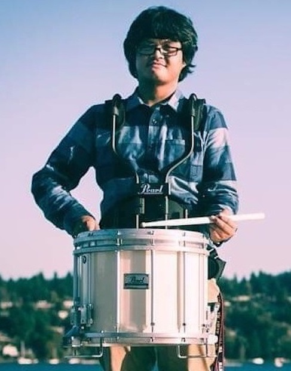
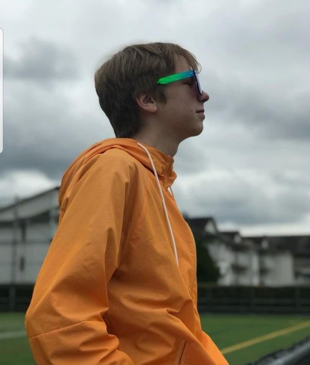
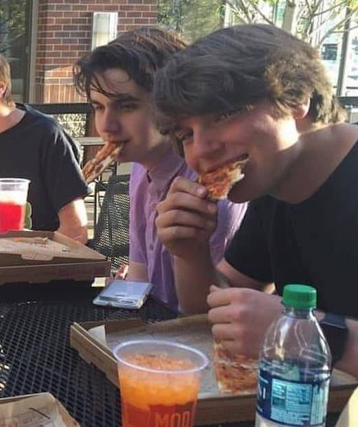
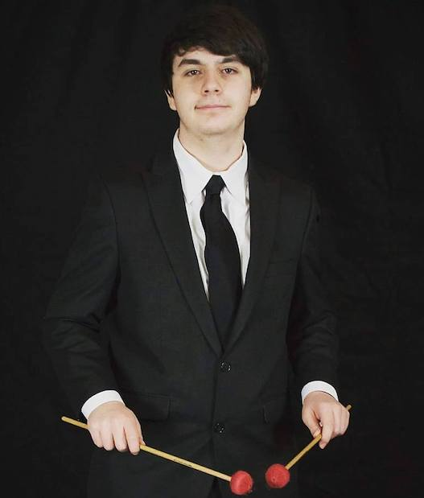
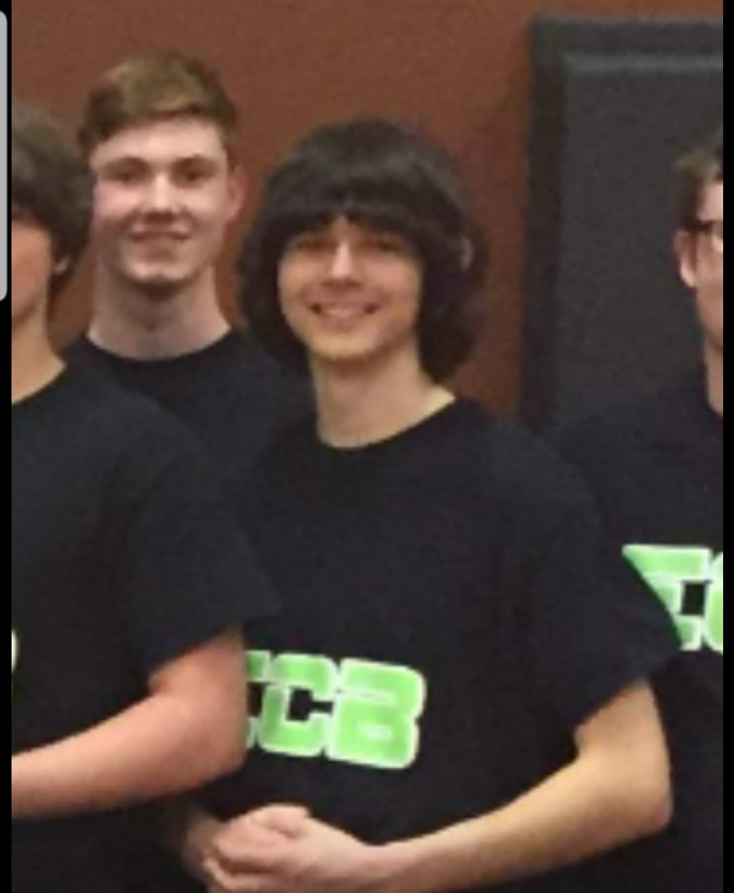

Age: 20 School/year: UW/ sophomore Instrument: Bass 1 Favorite part of ECB: playing beats, making friends. This was my first year in ECB and it was a really welcoming environment. I loved traveling, it was my first time out of the country.
Age: 18 School/year: UW, Freshman Instrument: Snare Drum Favorite part of ECB: The growth that the group goes through each year. Every year the group is always bringing something new to the table and I’m glad to be a part of it.
Age: 17 School/year: Tahoma High School, Junior Instrument: Snare drum Favorite part of ECB: final rehearsals, when it all comes together and sounds super clean
Age: 17 School/year: Tacoma High School Instrument: Bass Drum Favorite part of ECB: My favorite part of ECB was going to the shows and watching the other groups play. It’s cool that we get to be a part of such a great community.
Age: 17 School/year: Green River Community College Instrument: Marimba Favorite part of ECB: Canada Trip
Age: 17 School/year: Tahoma High School/junior Instrument: Tenors Favorite part of ECB: The experience of going places with the group and spending time together as well as playing the show for others